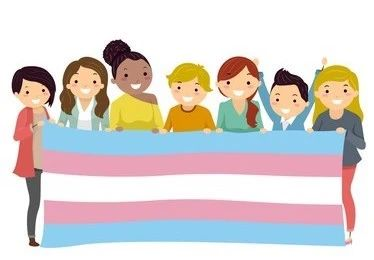

跨儿青春训练营第五期学员招募中
报名条件
1.自我认同为跨儿，或跨儿的家人、伴侣、朋友。
2.年满18岁。
3.未来一年以上，有志于从事跨儿公益。
4.有提升自身领导力的意愿，并有志于促进多元共融的文化。
扫描二维码或点击文末阅读原文报名，期待你的加入！
北同和湘雅二院共同发起了「2021年全国跨性别健康调研」，这是国内正在进行的最大样本量的跨性别群体调研。本次研究结果将会重点呈现给医疗、法律、政策、社区等相关方，为提升中国跨性别群体的权益提供有力且权威的数据支持。本次调研面向包括但不限于跨性别男性、跨性别女性、性别酷儿、第三性别等群体。
如果您愿意为跨性别公益出一份力，【欢迎扫描海报二维码填写问卷，或将本问卷推给其ta的跨性别伙伴】